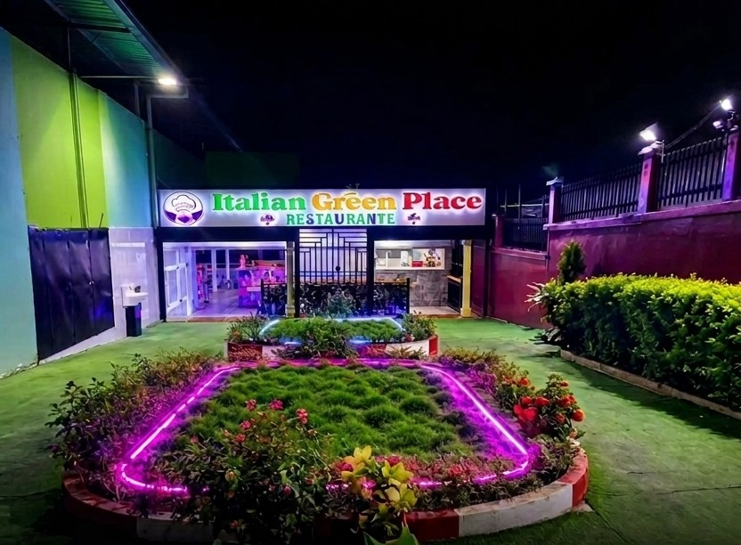
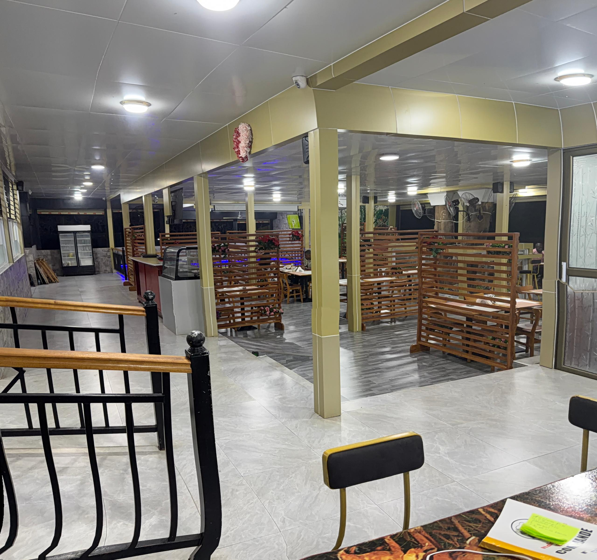
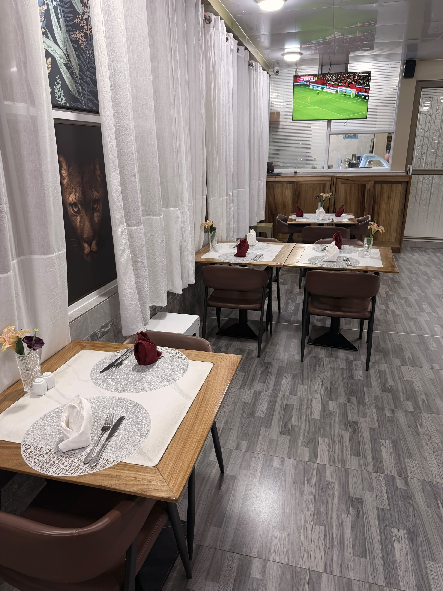
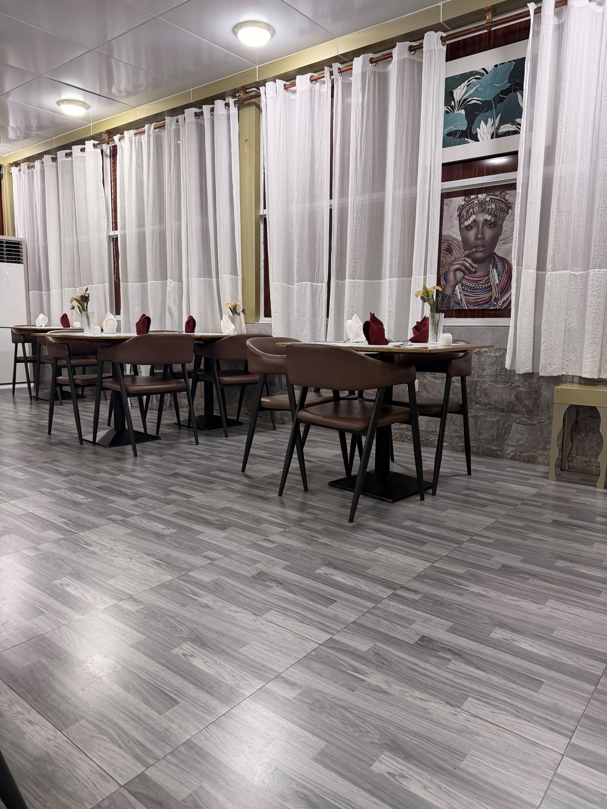
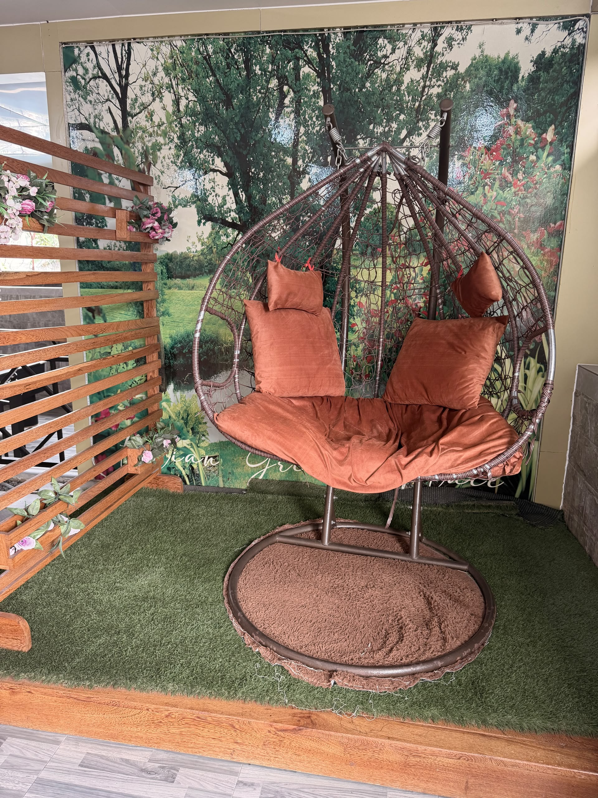
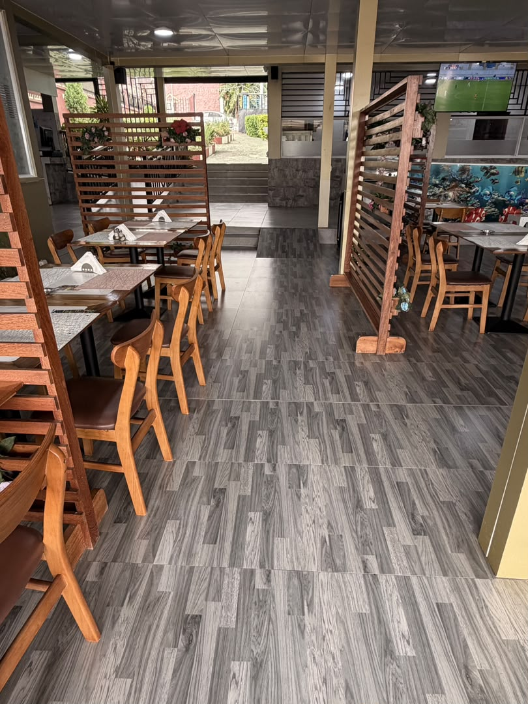
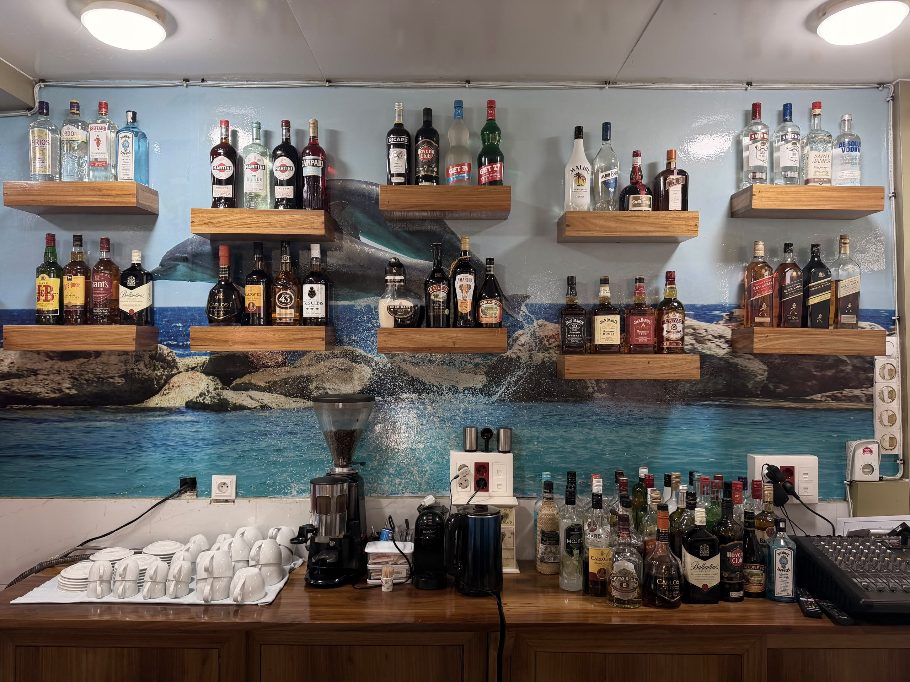
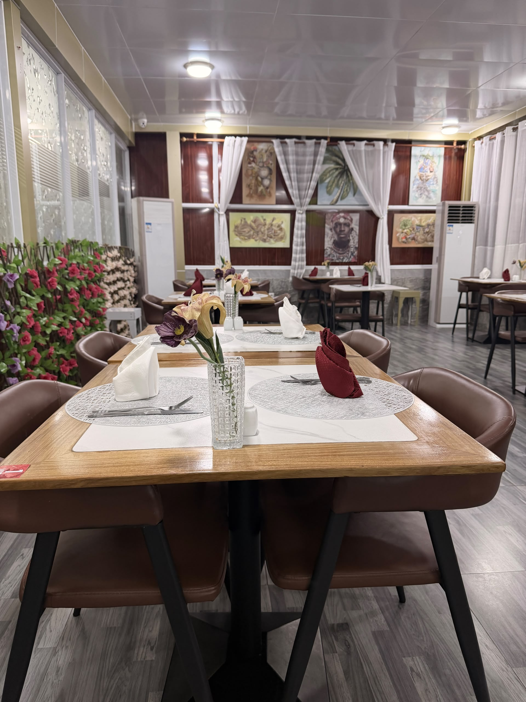
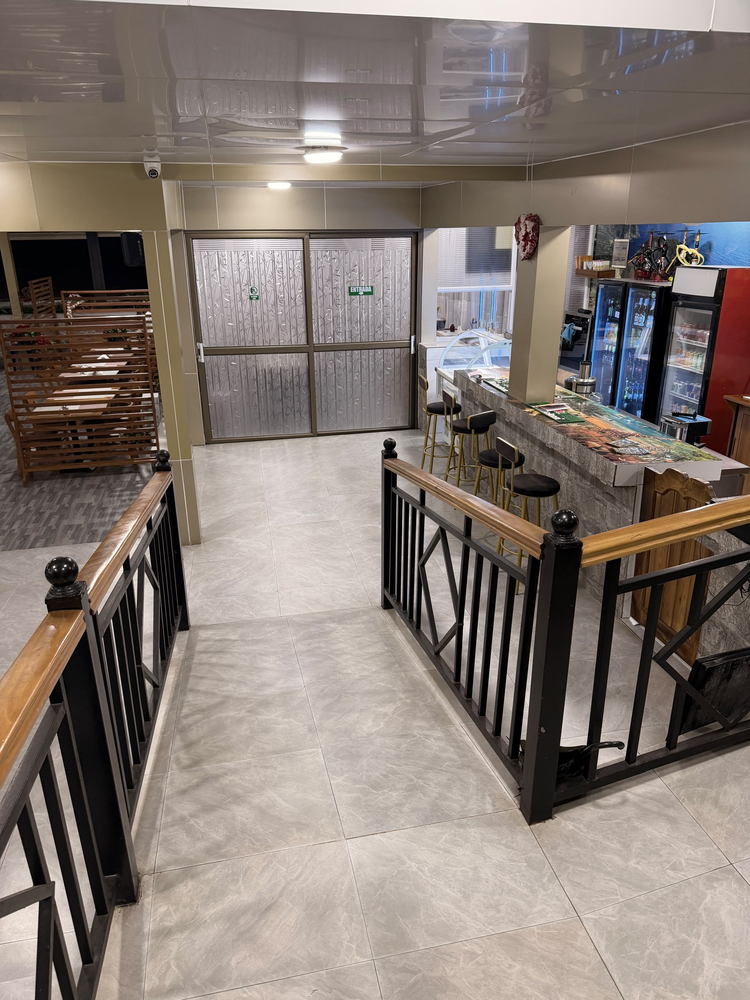
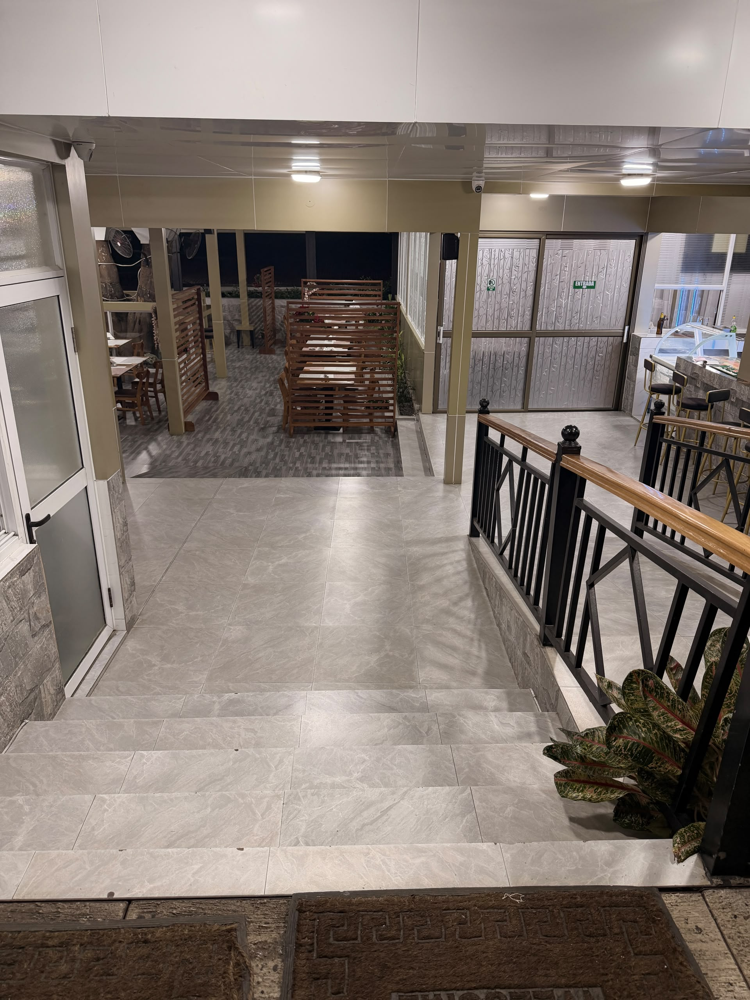

Célébrations
Anniversaires & mariages
Décoration sur-mesure, menu adapté et salle privatisable pour marquer les grandes occasions.
Organiser mon événement →Trattoria · Lounge · Événements
Chez Italian Green Place, une assiette généreuse côtoie une partie de billard et un narguilé partagé entre amis. Ici, la cuisine orientale rencontre l'art de prendre son temps.

Notre histoire
Italian Green Place est né d'une idée simple : un même lieu ne devrait pas choisir entre bien manger et bien passer sa soirée. Nos pâtes sont travaillées comme en Italie, nos sauces mijotent lentement, et notre salle s'ouvre ensuite sur un tout autre rythme — billard entre amis, chicha au fumet doux, ou table dressée pour célébrer un anniversaire.
Chaque recoin de la maison a été pensé pour qu'on y reste plus longtemps que prévu.
Marché chaque matin, produits de saison, rien qui ne traîne dans un congélateur.
Une brigade formée aux techniques orientales traditionnelles, sans raccourcis.
Anniversaires, mariages, soirées privées : on s'occupe du décor et de l'ambiance.
Deux salons pensés pour prolonger le repas dans une ambiance détendue.
Galerie
Cliquez sur une photo pour l'agrandir.









Plus qu'un dîner
Célébrations
Décoration sur-mesure, menu adapté et salle privatisable pour marquer les grandes occasions.
Organiser mon événement →Détente
Une table anglaise dans un salon , ouvert toute la soirée entre deux plats.
Réserver un billard →Ambiance
Coussins bas, lumière tamisée et large choix de saveurs pour prolonger la soirée.
Réserver une place →Une table vous attend